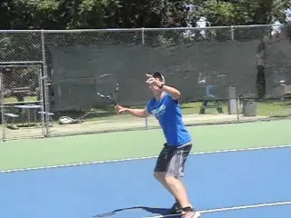

Is it the Overhead -- Or the In Front of Head?¶
Jeremiah Walsh¶

The \"overhead\" should be called the \"in front of head.\"
In my view the overhead isn't really an \"overhead.\" It shouldn't be called that. That word doesn't describe the key factor in hitting the shot well.
An overhead is really an \"in front of head.\" The critical moment is the contact. The contact is not over your head. It needs to be in front of your head.The key to keeping the contact in front of your head is footwork.It's learning how to move,how to stay behind the ball,and how to use your feet and legs depending on the type of overhead.
It's learning what to do when you have to come forward, when you have to move back, and also, when you have to move around the ball so you can hit an overhead from the backhand side.
Mechanics on the swing on the overhead are important. But in this article, I am focusing on the footwork. This is the critical factor in creating contact in front of the head.
When coaches are working with league teams, trying to take a player's swing apart can be a disaster. In the long run players may want to improve technique but trying to change in the middle of a season rarely improves results in competitive matches - in fact the opposite.
That negative experience can actually bias players against trying to improve technique in the long run. I feel that basic technical restructuring has to happen outside the competitive cycle. (For a great article on overhead mechanics by Kerry Mitchell, link.)

Movement is the key to keeping the ball in front at contact.
But even if you do work to improve your racket drop or the arm rotation on the forward swing, without good positioning and good contact point these kinds of changes can be irrelevant. If you are playing regular league tennis, movement and contact point are issues you can practice and improve now which can produce an immediate benefit.
Where is the Ball Headed?When most people picture an overhead they picture a ball dropping straight down to them. But tennis pros don't climb up on a ladder and drop balls straight down for you to hit in matches.When the opponent hits a good lob, the ball is headed to the back fence. The opponent is trying to get the ball over you. At the very least he is trying to get the ball behind your contact point.Movement is key to preventing this and establishing the \"in front of head\" contact point. But most players are not taught how to move to the overhead in the most effective way.Cross Steps
Traditionally when players are taught the overhead, they are taught to side step. Turn, side step back, step in, hit.

All players should learn to cross step back with the first step and turn the body.But good tennis players rarely take an initial side-step backwards. They take a cross step.
The movement should be like a quarterback. After the snap the first thing a quarterback does is take a cross step back.
Why? Because it's quicker. That's critical to getting in position to hit the ball in front of your head.
The other critical factor is to be able to hit off either foot - and to learn when to hit off each. Depending on the ball, sometimes you step in and sometimes you jump.
In tennis this means players should turn their hips and shoulders until they are parallel to the sideline as they cross step. They stay that way until it's time to swing.
This is because there are basically two types of overheads. Offensive and defensive. Offensive overheads are overheads that you actually get to step into. You step forward. You hit off the front foot.
Defensive overheads you can't step in. You have to hit these in the air. This is the way most pro overheads are hit, by launching into the air off the back foot.
To have a great overhead you have to recognize whether the shot is offensive or defensive and you need to be able to make contact in front of your head on both.
Offensive OverheadsWhen you can step in off the front foot to hit an offensive overhead, the key is finding the correct downward angle. The most common mistake is to overhit.

Step into an offensive overhead and find the downward angle.Players try for too much power and hit long. Or they try to make the ball bounce too high and end up missing into the net.Your target area should be somewhere around no man's land on the opponent's side. I call this the overhead zone.
That gives you 6 or 8 feet to miss in any direction. Don't try to hit at your opponent's feet. The target height should be somewhere between the knees and the waist.
On offensive overheads I generally advise my players to hit it about 70% of peak power because 70% seems to be the place where people relax and get the right trajectory. It should feel smooth.
When players try to hit a little bit harder and go for 80, 90, or 100% of their power, that's when they tend to clench up. They start dumping their overheads or shanking them because they're trying too hard. So, pay attention to your power quotient, even on offensive overheads.
Defensive Overheads
It's great to hit as many offensive overheads as possible, but the reality is that they are usually a small minority of the overheads hit in matches. As many as 90% of all overheads are defensive.

Defensive overheads mean going up in the air off the back foot.
This is another problem in lessons. Players stand on top of the net and practice mostly offensive overheads. They have no clue how to keep the contact point in front when they have to move back and jump.
To hit an effective defensive overhead you have learn to hit without stepping in with the front foot.You have to learn to hit in the air by jumping off the back foot.Remember, the ball is trying to get behind you. If that happens you can't generate power. So, you can't let that happen. Your job is to cut the ball off before it does.The key is not swinging fast, it's creating the contact point. In fact, when you hit defensive overheads I suggest you use about 50% off your power.You can't crush most defensive overheads. The goal is to hit a nice smooth stroke. The key is to realize at the start that you are defending. Don't mistake a defensive overhead for an opportunity that it's not.Establish the contact in front of the head--not over the head. If you do this, you can hit very effective overheads from no man's land.
In baseball, the first thing outfielders do is drop back, gauge everything, and then go forward if they need to.

Practice getting around the ball and hitting the inside out overhead.This same strategy can work on the overhead. If you aren't certain how good the lob really is, as soon as the ball goes up your first move should be to drop back and make sure you can stay behind the ball.The Inside Out Overhead
There is a third overhead movement pattern that rarely gets practiced but is also critical to having a complete overhead. The inside out overhead. It's like the inside out forehand.
Do you really want to have to hit a backhand overhead, the single most difficult shot in tennis? Or worse let the ball actually get behind you or even completely over you on your backhand side?
Why not hit an overhead and stay ahead in the point or win it outright? Good players move around the ball to hit inside out forehands whenever possible.
This should also be true at the net. Get around the ball and hit an inside out overhead. Use your overhead and take advantage of the chance to stay ahead or to finish the point.
For the inside out overhead you move back on a diagonal to get into position.But it's also critical that you turn and align your shoulders.Basically, you want to visualize the shoulders lined up with the opposite corner of the court.
With the inside out overhead, the same rules apply about which foot to hit off of. Step in on the offensive overheads with the front foot. Launch yourself up and back off the back foot when it's defensive.
The Bounce

When the overhead bounces, lower your body to keep the contact point.A final situation. What about when the ball bounces? This can happen when the ball is short, or you don't have time to get all the way around it and hit it in the air. It can be better to let it bounce in these cases.The key here is the knee. The feeling is that you are lowering yourself.This allows you to keep the same contact point with the hitting arm extended but still in front of the head. Lower yourself and hit off that front foot!The commonalities in all these variations are the same: the right movement pattern, staying behind the ball, knowing which foot to hit off of, and most importantly, contact in front of your head. Remember it's the in front of head!
|  | California since 2009, the club where he grew |
| up playing. He is also director of The | |
| Ascension Project, a unique, non-profit junior | |
| development program based at Sun Oaks which | |
| focuses on junior tournament competition as a | |
| team sport. | |
| Before returning to Sun Oaks, Jeremiah had a | |
| distinguished career in college coaching as a | |
| head coach at Virginia Military Institute, the | |
| University of Northern Colorado, and Southern | |
| Oregon University where his women's team set | |
| a new school record for single season winning | |
| percentage. He is an avid outdoorsman, | |
| sportsman, and game hunter who makes delicious | |
| venison and bear sausage, as testified to by | |
| the Tennisplayer editorial staff. |